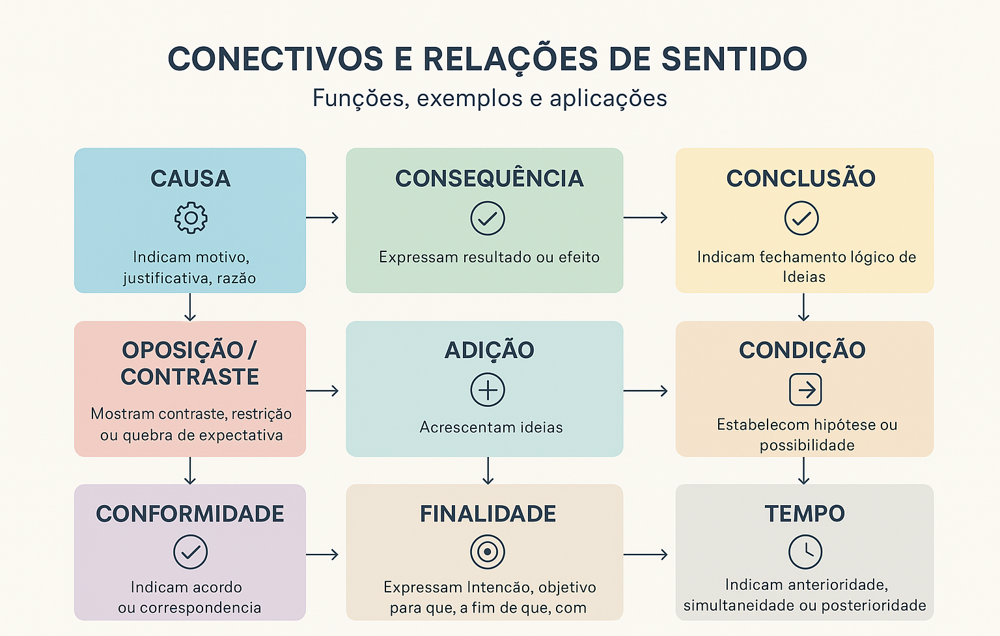

Conectivos e Relações de Sentido: guia completo para escrever com clareza
O que são conectivos e por que eles tornam o texto mais claro
Os conectivos são palavras ou expressões que ligam ideias em um texto, criando fluidez, clareza e lógica entre as informações apresentadas. Eles estabelecem relações de sentido como causa, oposição, conclusão, condição, entre outras.
Dominar os conectivos é essencial para produzir textos coesos e bem organizados. A seguir, você verá as principais categorias de conectivos, seus sentidos e exemplos práticos para aprender a aplicar cada tipo corretamente.
Conectivos de Causa
Indicam o motivo ou razão de uma ação ou fato. São essenciais para explicar por que algo acontece.
Exemplos: porque, visto que, já que, uma vez que, como (no início da frase).
Exemplo no contexto: Não saiu de casa porque estava chovendo.
Conectivos de Consequência
Expressam o resultado ou efeito de um fato anterior. São úteis para apresentar conclusões lógicas dentro do texto.
Exemplos: portanto, assim, logo, por isso, consequentemente.
Exemplo no contexto: Estudou bastante, por isso conseguiu boas notas.
Conectivos de Oposição (Adversidade)
Estabelecem contraste entre ideias. Servem para apresentar discordância ou ruptura lógica no discurso.
Exemplos: mas, porém, contudo, todavia, entretanto.
Exemplo no contexto: Queria viajar, mas não tinha dinheiro.
Conectivos de Concessão
Indicam uma ideia que contraria a expectativa criada pela frase principal, mas não a impede de acontecer.
Exemplos: embora, ainda que, mesmo que, apesar de.
Exemplo no contexto: Embora estivesse cansado, continuou trabalhando.
Conectivos de Conclusão
Apontam fechamento de ideias, sínteses ou inferências lógicas. São muito usados em textos argumentativos.
Exemplos: portanto, assim, logo, desse modo, enfim.
Exemplo no contexto: O argumento é consistente; portanto, merece destaque.
Conectivos de Adição
Introduzem novas informações, reforçam argumentos ou ampliam ideias. Contribuem para encadear tópicos semelhantes.
Exemplos: e, também, além disso, bem como, ainda.
Exemplo no contexto: Ele estudou o conteúdo e fez resumos.
Conectivos de Comparação
Estabelecem semelhança, contraste ou proporcionalidade entre elementos.
Exemplos: como, assim como, tal qual, mais… que, menos… que.
Exemplo no contexto: O filme foi mais emocionante do que eu esperava.
Conectivos de Condição
Mostram hipótese ou condição necessária para que algo aconteça.
Exemplos: se, caso, contanto que, desde que, a menos que.
Exemplo no contexto: Você pode sair se terminar o trabalho.
Conectivos de Finalidade
Indicam objetivo, intenção ou propósito de uma ação.
Exemplos: para, para que, a fim de, com o propósito de.
Exemplo no contexto: Estudou bastante para passar no concurso.
Conectivos de Tempo
Localizam ações no tempo e organizam a sequência cronológica dos acontecimentos.
Exemplos: quando, enquanto, depois que, assim que, antes que.
Exemplo no contexto: Avisarei quando chegar.
Conectivos de Explicação
São usados para justificar, esclarecer ou detalhar uma afirmação anterior.
Exemplos: porque (explicativo), pois (antes do verbo), já que, visto que.
Exemplo no contexto: Não vá agora, pois ainda é cedo.
Conectivos de Exemplificação
Introduzem exemplos que facilitam a compreensão de uma ideia.
Exemplos: por exemplo, como, tais como, ou seja, isto é.
Exemplo no contexto: Alguns animais, por exemplo, répteis, são de sangue frio.
Casos que precisam ser memorizados
Alguns conectivos apresentam usos específicos que precisam ser observados no contexto, pois podem indicar mais de um sentido dependendo da posição na frase.
Exemplos: como (causa ou comparação), pois (explicação ou conclusão), que (explicativo).
Conectivos que costumam gerar confusão
“Pois” antes ou depois do verbo: antes do verbo, é explicativo; depois do verbo, pode indicar conclusão.
“Como”: no início da frase pode indicar causa; no meio da frase tende a indicar comparação.
“Logo”: pode ser advérbio temporal (“em breve”) ou conectivo conclusivo (“portanto”).
Quiz — Conectivos e Relações de Sentido
Questão 1 — Qual conectivo abaixo expressa ideia de causa?
A) Porém
B) Porque
C) Contudo
Qual está correta?
Questão 2 — O conectivo “portanto” indica qual relação de sentido?
A) Comparação
B) Conclusão
C) Condição
Questão 3 — Assinale a alternativa em que o conectivo expressa oposição.
A) Estudou muito, mas não passou.
B) Chegou cedo, por isso conseguiu lugar.
C) Estava cansado, porque trabalhou demais.
Questão 4 — Qual alternativa apresenta um conectivo de condição?
A) Embora
B) Se
C) Logo
Questão 5 — Em qual alternativa o conectivo expressa finalidade?
A) Estudou, por isso passou na prova.
B) Chegou cedo, porque precisava falar com o professor.
C) Treinou intensamente para melhorar seu desempenho.
Explore Outros Conteúdos
Continue seus estudos acessando outras seções do site Mestre Kira: